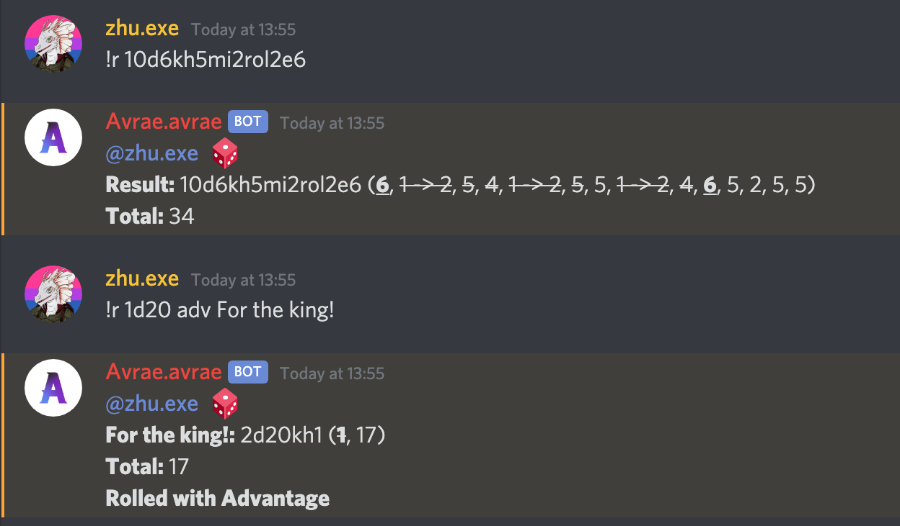
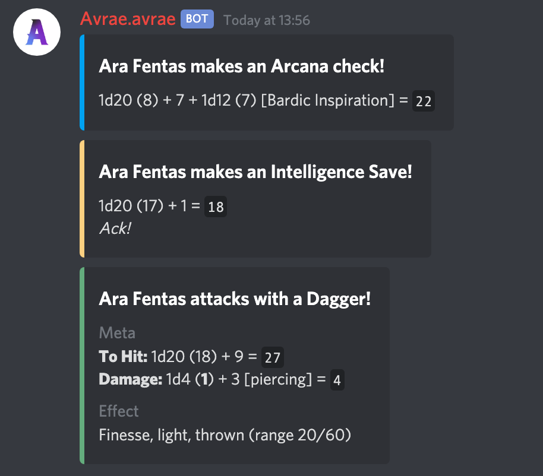
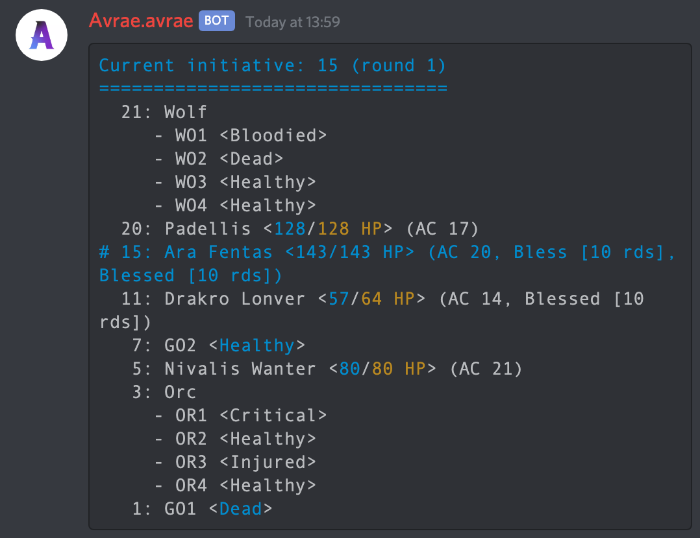

I am Avrae, a Discord bot designed to help you and your friends play D&D online.
Advanced Dice Roller
With a custom dice parser, Avrae is one of the most advanced dice rollers on Discord, capable of supporting pretty much every type of roll needed to play D&D. Advantage, disadvantage, and crits are built in, you can keep, drop, or reroll dice as needed, dice can explode, and dice can be bounded.
Character Sheet Integration
Avrae can read character sheets from D&D Beyond, Dicecloud, or a Google Sheet, automatically generating macros to roll attacks, ability checks, and saving throws. A player can then simply use a command to make a check, save, attack, or cast, and all necessary rolls will be resolved automatically.
Initiative Tracking
The initiative tracker is a fast way to track combat in a text channel. It supports automatic combatant sorting, HP, AC, resistance, and status effect tracking, and integration with the character sheet manager and 5e content to further streamline combat.
Connect Avrae
You can invite Avrae to your server here! Just select your server in the dropdown menu, and ensure that "Read Messages", "Send Messages", "Embed Links", and "Manage Messages" are enabled!
INVITE